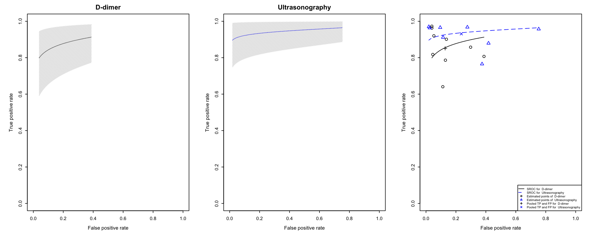
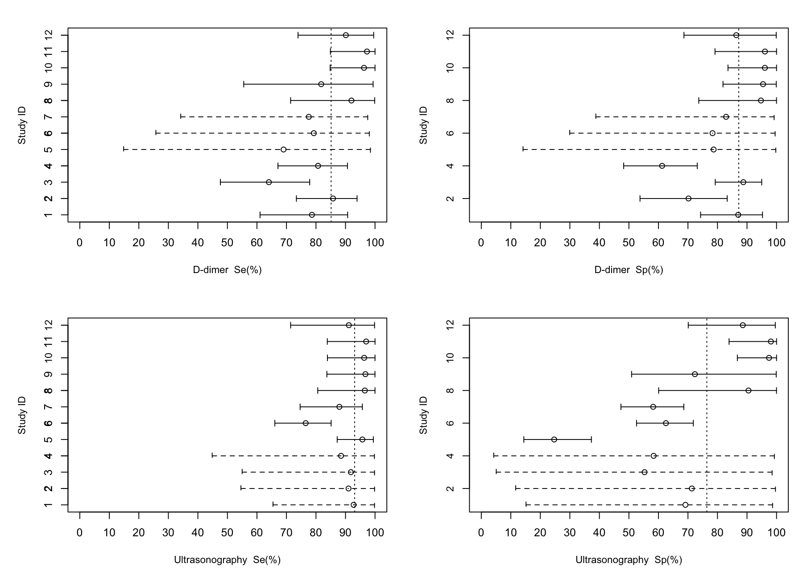

Get started with NMADTA
get-started.RmdThis guide follows a complete hierarchical-model analysis of the included deep vein thrombosis data, from installation to posterior summaries and plots. The figures and numerical output below were generated with NMADTA 0.1.4.
Installation
NMADTA needs R 4.0.0 or later and JAGS 4.x. JAGS is a separate program: install it from the JAGS project first.
install.packages("NMADTA")
library(NMADTA)
rjags::jags.version()
packageVersion("NMADTA")If rjags cannot load, check that JAGS is installed for
your operating system and processor architecture, then restart R.
Inspect the study data
The dat.kang dataset has 48 rows of joint outcome counts
from 12 studies. The candidate tests are D-dimer and ultrasonography;
venography is the reference.
| Tests observed | Studies |
|---|---|
| D-dimer and venography | 4 |
| Ultrasonography and venography | 3 |
| D-dimer and ultrasonography | 5 |
sid delta0 delta1 delta2 T0 T1 T2 n
1 1 1 1 0 1 1 999 16
2 1 1 1 0 1 0 999 5
3 1 1 1 0 0 1 999 4
4 1 1 1 0 0 0 999 28
5 2 1 1 0 1 1 999 32
6 2 1 1 0 1 0 999 5A missing test is indicated by delta = 0 and the outcome
code 999. These rows record joint test outcomes, rather
than a separate 2 by 2 table for every comparison. Read Preparing your data before using your own
study data.
Fit the hierarchical model
Here nstu = 12 is the number of studies and
K = 2 counts the candidate tests, excluding the reference
standard.
set.seed(10)
kang_fit <- nmadt.hierarchical(
nstu = 12, K = 2, data = dat.kang,
testname = c("D-dimer", "Ultrasonography"),
directory = tempdir(),
n.adapt = 5000, n.iter = 50000, n.chains = 3,
n.burnin = 25000, n.thin = 1,
conv.diag = TRUE, trace = NULL,
dic = FALSE, mcmc.samples = FALSE
)This run uses 5,000 adaptation iterations, followed by 50,000 iterations per chain, with the first 25,000 removed as burn-in. Three chains are used. Running time depends on the model, data, and computer.
Read the posterior summaries
summary(kang_fit)Model: hierarchical
Sensitivity (Median and 95% CrI):
Median (95% CI)
D-dimer 0.8513 (0.6928, 0.9783)
Ultrasonography 0.9310 (0.8265, 0.9924)
Specificity (Median and 95% CrI):
Median (95% CI)
D-dimer 0.8721 (0.7191, 0.9878)
Ultrasonography 0.7640 (0.4833, 0.9638)These are the sensitivity and specificity summaries from this run. The full output also includes prevalence, predictive values, and likelihood ratios. Download the complete summary. Numerical results can vary across platforms and JAGS runs.
Visualize diagnostic accuracy
plot(kang_fit, type = "sroc")
The first two panels show the SROC display for each candidate test. The third compares the fitted curves and study-level estimates.
plot(kang_fit, type = "forest")
Other available displays are type = "density" and
type = "contour". See plot.nmadt() for
options.
Assess convergence and assumptions
The fit requests potential scale reduction factors through
conv.diag = TRUE. A writable directory is
required for these diagnostics or trace files. To inspect trace plots,
fit the model with a selected quantity such as trace = "Se"
or trace = "Sp".
In this illustrative run, the largest PSRF point estimate was 1.27 for the positive likelihood ratio of ultrasonography. Extend the run and reassess diagnostics before substantive inference for that quantity.
Check mixing, convergence, and sensitivity to prior choices before
interpreting results. Longer chains may be needed. To retain the
additional MCMC sample output, use mcmc.samples = TRUE.
The regular function uses the MAR formulation. Use dedicated MNAR functions to examine alternative missing-data assumptions.
Reproducibility
tools/reproduce-example.R contains the full fitting and
plotting code. Figures shown here are actual outputs of that script; the
model is not run in the browser.
- Input data as CSV
- Convergence diagnostics from this run
- Full posterior summary
- Computing environment
- Run settings
The RSM article used NMADTA 0.1.3. Its replication repository provides the original materials.